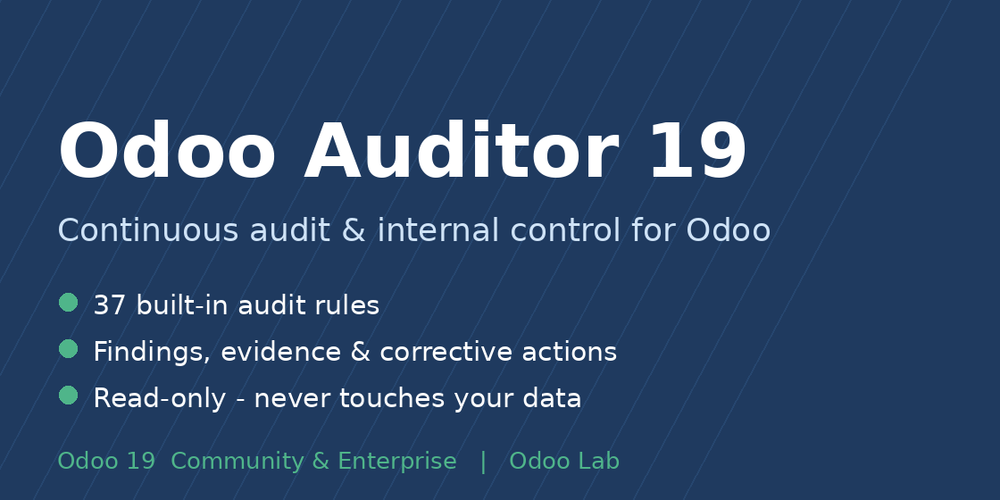
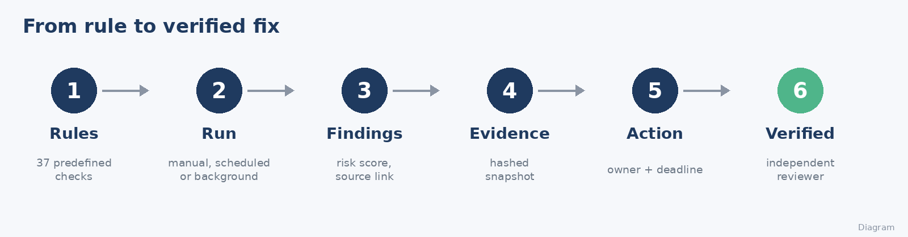
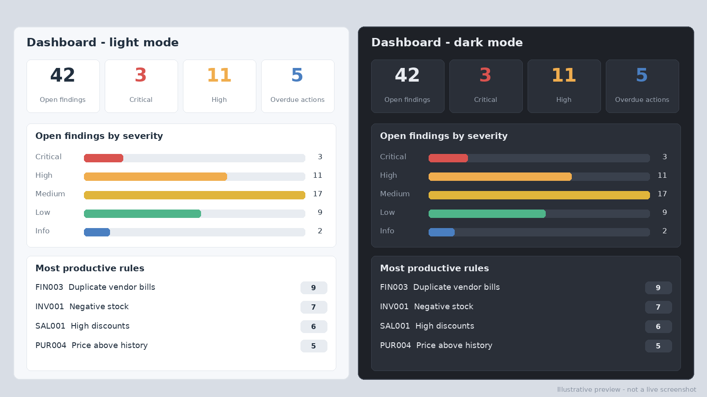
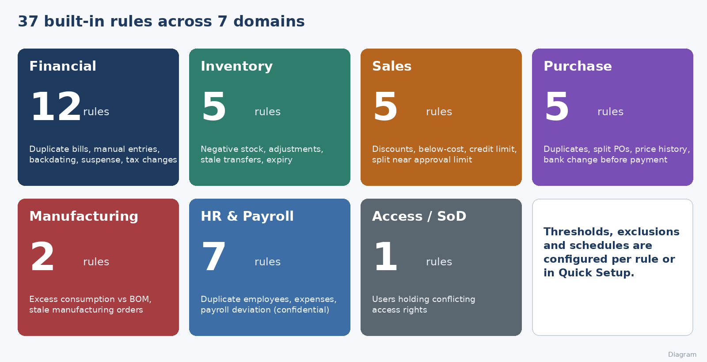
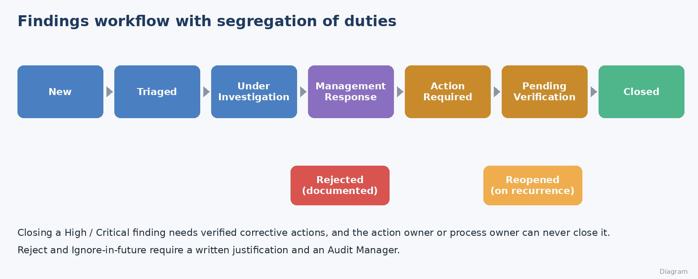
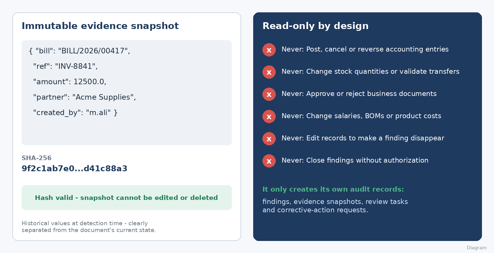

Odoo Auditor 19
Enterprise-wide internal audit, continuous monitoring and corrective-action management for Odoo 19.
Odoo 19 Community & Enterprise
Read-only & safe
Light & dark mode
Arabic & English
Why Odoo Auditor?
Most "audit" apps only log who changed what. Odoo Auditor is a complete audit workflow: it scans your accounting, inventory, sales, purchase, manufacturing and HR data with 37 predefined rules, turns exceptions into findings with preserved evidence, and follows each one through investigation, management response, corrective action and independent verification.
It is read-only toward your business data. It never posts, cancels, approves or edits your records.

Dashboard - light and dark mode
Open findings by severity and domain, overdue actions, most productive rules and latest runs. Every card drills down to the filtered list. Follows Odoo's light or dark theme automatically.

37 built-in rules, 7 domains

- Financial: duplicate vendor bills and customer invoices, large manual entries, backdated postings, aged drafts, overdue receivables/payables, round-number patterns, suspense balances, abnormal period-over-period movements, stale bank lines, tax changes.
- Inventory: negative stock, large adjustments, stalled transfers, deliveries without sales order, expired / near-expiry lots.
- Sales: high discounts, sales below cost, orders just below approval limits, archived customers, credit-limit breaches.
- Purchase: high-value and split purchase orders, bills without PO, price above vendor history, vendor bank change before payment.
- Manufacturing: component consumption above BOM, stale manufacturing orders.
- HR & payroll (confidential): duplicate employees, missing master data, duplicate / over-limit / receipt-less expenses, payroll deviation, payroll rule changes.
- Access: segregation-of-duties conflicts with configurable group pairs.
Rules are controlled, predefined implementations - no arbitrary code, eval or SQL is ever run from configuration. Rules whose apps are not installed are skipped safely.
Findings workflow with segregation of duties

- Kanban, list, graph and pivot views, with filters for my findings, unassigned, past due and reopened.
- One-click Create Corrective Action from any finding.
- Ignore in future with a documented reason; archive the exclusion to report again.
- Automatic reopen on recurrence; duplicate-proof re-runs.
- Risk score from severity and the nature of the exception (verified inconsistency, policy exception, risk indicator, needs investigation).
Immutable evidence & read-only design

Everything an internal audit team needs
- Quick Setup wizard: set thresholds once, activate every applicable rule.
- Background runs with live progress, scheduled runs, per-company locking, multi-company support.
- Corrective actions with owners, deadlines, verification by an independent person and automatic escalation of overdue items.
- Audit plans, programs and workpapers (preparer and reviewer must differ), sample documentation.
- Risk & control register with documented scoring (inherent and residual).
- Access reviews and period / year-end checklists.
- Reports: PDF (finding, run summary, plan, actions) and Excel export.
- Protected audit log of the Auditor's own records (append-only).
- Confidential access group for HR / payroll findings; no salary values are ever shown.
Quick start
- Install the module and add yourself to Odoo Auditor / Audit Manager.
- Open Configuration > Quick Setup, review thresholds, press Apply.
- Open Audits > Run Audit and let it run in the background.
- Review the Dashboard, triage findings, assign corrective actions.
Technical information
| Technical name | odoo_auditor |
| Odoo version | 19.0 - Community and Enterprise |
| Dependencies | base, mail (Accounting, Sales, Purchase, Inventory, MRP, HR are optional and detected automatically) |
| Python libraries | xlsxwriter (included with Odoo) |
| Languages | English, Arabic |
| License | Odoo Proprietary License v1.0 (OPL-1) |
USD 249
One-time purchase · one Odoo database · Community and Enterprise
Includes free bug-fix support. Price is shown by the Odoo Apps store at checkout.
Frequently asked questions
Will it change my accounting or stock data?
No. It only reads business data and creates its own audit records.
Does it say a transaction is fraud?
No. Every finding is a risk indicator for human review and states whether it is a verified inconsistency, a policy exception, a risk indicator or an item needing investigation.
I do not use Payroll / Manufacturing. Is that a problem?
No. Rules for apps that are not installed are skipped with a warning.
Can I add my own rules?
You can tune thresholds, exclusions, schedules and severity of every rule. New detection logic is added in Python by a developer (controlled rule registry).
نبذة بالعربية
Odoo Auditor مديول مراجعة داخلية ورقابة مستمرة لأودو 19. يفحص المحاسبة والمخزون والمبيعات والمشتريات والتصنيع والموارد البشرية بـ 37 قاعدة جاهزة، ويحوّل الاستثناءات إلى ملاحظات بأدلة محفوظة، ويتابعها حتى الإغلاق بإجراءات تصحيحية وتحقق مستقل.
- للقراءة فقط: لا يرحّل ولا يلغي ولا يوافق ولا يعدّل أي سجل.
- لوحة معلومات بالوضعين الفاتح والمظلم، وعرض Kanban للملاحظات.
- فصل مهام في الإغلاق والتحقق، وسجل تدقيق محمي، وصلاحيات سرّية لملاحظات الموارد البشرية.
- معالج إعداد سريع، تشغيل في الخلفية بشريط تقدم، تقارير PDF وتصدير Excel.
- خطط ومراجعات وأوراق عمل، سجل مخاطر وضوابط، مراجعات صلاحيات، وقوائم إقفال.
- واجهة عربية كاملة.
Developed by Eng. M.Aboelmagde · Odoo Lab (@odoolab)